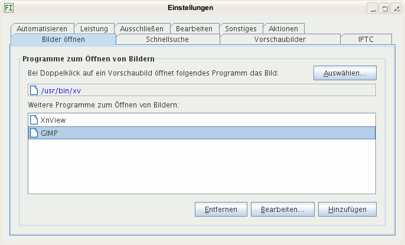

Wählen Sie ein Programm aus durch Klick auf die Schaltfläche Programm auswählen, das bei Doppelklick auf ein Vorschaubild die Original-Bilddatei öffnen soll. Das kann ein Bildbetrachter sein oder eine Bildbearbeitung.
Hier können Sie mehrere Programme hinzufügen, die zum Öffnen von Bildern angeboten werden vom Kontextmenü im Fenster mit den Vorschaubildern.

Sie können das gleiche Programm mehrmals eintragen mit verschiedenen Aufrufparametern. Zum Hinzufügen wird Ihnen der Dialog Programmeigenschaften angeboten.
Siehe auch: Dialog Aktionen und Tipp: Mehr Funktionen hinzufügen.